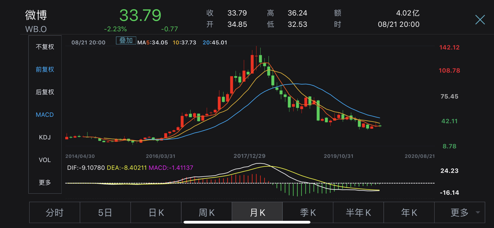

@月风_投资笔记:
大家都是微博用户，我就直说了，在现有格局的互联网巨头眼里，微博用户是倒数前三的劣质用户群之一。
为什么，想法多、观点多、年轻人多、态度容易煽动更容易摇摆、容易情绪化、不借地气、没受过多少社会的毒打，最关键的是，手里钱还少。
俗称“钱少事多，白嫖至上，爱恨鲜明，理想处世”。
所以微博上的变现率、广告单价一直不尽人意，微博的美股一直是中概股里的优秀队友，用来衬托其他牛股的牛批用的。
所以微博用户是最看不懂看不起拼多多和淘宝直播的（微博自己的直播带货也做的很一般），也是最看不懂所谓的十八线经济的潜在价值（比如微信支付）。
不过别急，广告价值和用户价值倒数第一的可不是咱们微博，而是最事逼最年轻最没钱最情绪化的——知乎用户
日常黑知乎（1/1）。
为什么，想法多、观点多、年轻人多、态度容易煽动更容易摇摆、容易情绪化、不借地气、没受过多少社会的毒打，最关键的是，手里钱还少。
俗称“钱少事多，白嫖至上，爱恨鲜明，理想处世”。
所以微博上的变现率、广告单价一直不尽人意，微博的美股一直是中概股里的优秀队友，用来衬托其他牛股的牛批用的。
所以微博用户是最看不懂看不起拼多多和淘宝直播的（微博自己的直播带货也做的很一般），也是最看不懂所谓的十八线经济的潜在价值（比如微信支付）。
不过别急，广告价值和用户价值倒数第一的可不是咱们微博，而是最事逼最年轻最没钱最情绪化的——知乎用户
日常黑知乎（1/1）。
- 